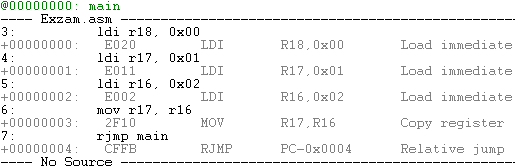

|
| Алгоритмы арифметической обработки данных |
|
Цель работы:
изучить основные приёмы, используемые при программировании арифметических операций над двоичными и двоично-десятичными числами.
|
| Краткие теоретические сведения |
|
Для выполнения арифметических операций в микроконтроллере ATmega предусмотрены следующие команды:
- ADD - сложение двух РОН, результат сохраняется в первом операнде;
- ADC - сложение двух РОН с учётом переноса (к результату добавляется значение флага C регистра SREG);
- ADIW – сложение регистровой пары с константой;
- SUB – вычитание двух РОН, результат сохраняется в первом операнде;
- SUBI – вычитание константы из РОН;
- SBC – вычитание двух РОН с заёмом (от результата отнимается значения флага C регистра SREG);
- SBCI – вычитание константы из РОН с заёмом;
- SBIW – вычитание константы из регистровой пары;
- DEC – декремент РОН;
- INC – инкремент РОН;
Эти команды выполняют арифметическую операцию между двумя операндами, результат формируется в первом операнде.
Команды add, adc,
sub, subi, sbc,
sbci – модифицируют значение флагов Z, C, N, V, H. adiw и
sbiw изменяют значения флагов Z, C, N, V, S. dec и
inc – Z, N, V.
Арифметические операции выполняются над 8-разрядными двоичными числами. Однако программист может интерпретировать операнды и результат операций
различными способами:
- как восьмиразрядное двоичное число без знака (0...25510);
- как семиразрядное двоичное число со знаком (-12710...+12710);
- как двухразрядное десятичное число без знака (0...9910);
- как двухразрядное десятичное число со знаком (-4910...+4910);
Например, двоичное число 10001000 можно интерпретировать как 13610, -12010, 8816, -1216. При этом для
представления отрицательных чисел используется дополнительный код, вычисляемый по формуле:
ДопКод = FF - a + 1,
где а – основание системы счисления.
Конкретный способ интерпретации определяется программистом и зависит от назначения программы.
При написании программ следует учитывать, что команды сложения и вычитания осуществляют обработку данных по законам двоичной арифметики. Поэтому
арифметические операции над двоично-десятичными числами выполняются за несколько шагов.
При сложении:
а) двоичное сложение add;
б) десятичная коррекция.
При вычитании:
а) формирование дополнительного кода вычитаемого (9910 – ПрКод+1);
б) десятичная коррекция;
в) двоичное сложение add;
г) десятичная коррекция.
Десятичная коррекция выполняется над каждой тетрадой числа следующим образом:
- если после сложения значение младшей тетрады больше 9 или установился флаг H, то к результату прибавляется 6;
- если после сложения значение старшей тетрады больше 9 или установился флаг C, то к старшей тетраде прибавляется 6.
Например:
Сложение и вычитание чисел большой длины (16, 24 и более разрядов) выполняются побайтно. При этом сначала обрабатываются младшие байты операндов,
а затем последующие (с учётом переноса от предыдущей операции).
В микроконтроллерах ATmega имеется команда умножения mul 8-разрядных операндов, которая формирует
16-разрядный результат в регистровой паре R0-R1. Однако отсутствуют команды деления и обработки чисел с плавающей запятой. Эти операции выполняются
программно – путём соответствующих комбинаций команд сложения, вычитания и сдвига.
При обработке данных используются также команды пересылок:
- MOV - пересылка данных между РОН;
- MOVW - пересылка данных между регистровыми парами;
- STS – непосредственная запись в ОЗУ, первый операнд – адрес ОЗУ, второй – РОН;
- LDS – непосредственное чтение из ОЗУ, первый операнд – РОН, второй – адрес ОЗУ;
- LDI – загрузка константы в РОН, первый операнд – РОН, второй – константа;
- а также команды пересылок с косвенной адресацией. Команды пересылок содержимое регистра флагов не изменяют.
Команды сравнения можно использовать для модификации флагов S, Z, C, N, V, H перед командами условного перехода. При этом вычисляется разность
содержимого операндов, модифицируются флаги, но результат не сохраняется. Список изменяемых флагов можно найти в справочнике команд в
приложении.
- CP - сравнение содержимого двух РОН. Фактически производится вычитание без сохранения результата;
- CPC - сравнение содержимого двух РОН с учётом флага переноса C. Удобна для сравнения нескольких байтов;
- CPI – сравнение содержимого РОН с константой;
- CPSE – сравнение двух РОН, с пропуском следующей команды при равенстве их содержимых.
Также существует группа команд условного и безусловного перехода.
- JMP - безусловный переход по указанному адресу;
- другие.
Команды условного перехода осуществляют проверку флагов регистра состояния SREG и осуществляют переход к указанному адресу:
- BRCC/BRCS - переход по переносу (C = 0 / 1);
- BRNE/BREQ - переход по нулевому результату (Z = 0 / 1);
- BRGE/BRLT - переход по «больше или равно» (со знаком) N ⊕ V (S = 0 / 1);
- BRPL/BRMI - переход по условию «отрицательное значение» (N = 0 / 1);
- BRHC/BRHS - переход по половинному переносу (H = 0 / 1);
- BRVC/BRVS - переход по переполнению дополнительного кода (V = 0 / 1).
Далее за командой перехода следует имя метки, обозначающей начало подпрограммы:
main: ldi r16, 0x00
ldi r17, 0x01
ldi r18, 0x02
mov r17, r16
rjmp main
|
|
Из кода видно, что перед тем как начать выполнение циклической программы сначала, в цикле выполняются 4 команды. Следовательно, переход на метку
main в данном случае означает возврат счётчика команд PC на 4 значения назад.
Если включить опцию Disassembly во время отладки, то это можно увидеть явно:

|
| Задания на лабораторную работу |
|
ЗАДАЧА 1.1. Написать программу сложения (вычитания) двух 8-разрядных двоичных чисел, одно из которых содержится в регистре R, а второе – в
ячейке памяти данных с адресом 0x02**. Результат поместить в память данных по адресу 0x03**.
Программы проверить на примерах: 1) 8816 +(-) ** ; 2) 00 +(-) ** ; 3) FF +(-) **. Исходные операнды задаются на этапе выполнения
программы в режиме отладки.
ЗАДАЧА 1.2. Написать программу сложения (вычитания) двух 16-разрядных двоичных чисел, одно из которых содержится в регистрах R, R1, а
второе – в ячейках памяти данных с адресами 0x02**, 0x02** + 1. Результат поместить в ячейки памяти данных с адресами 0x03**, 0x03** + 1. Исходные
операнды задаются на этапе выполнения программы в режиме отладки.
Программы проверить на примерах: 1) 888816 +(-) **АВ; 2) 0000 +(-) АВ**; 3) FFFF +(-) А**В.
ЗАДАЧА 1.3. Написать программу умножения 16-разрядного операнда, находящегося в ячейках памяти данных с адресами 0x02**, 0x02** + 1 на
8-разрядный операнд **, находящийся в регистре R. Результат разместить в памяти данных, начиная с адреса 0x03**.
Программы проверить на примерах: 1) 0002 • **; 2) 001016 • **; 3) 010016 • **; 4) А**В • **.
ЗАДАЧА 1.4. Написать программу деления операнда **, находящийся в регистре R на 8-разрядный операнд, находящийся в ячейке памяти данных с
адресом 0x02**. Сохранить частное в ячейке памяти данных с адресом 0x03**, а остаток – в ячейке 0x03** + 1. Написать коментарии, поясняющие принцип
работы алгоритма. Время выполнения программы не должно зависеть от входных данных.
Программу проверить на примерах: 1) ** : 02; 2) ** : 1016; 3) ** : 0F16.
ЗАДАЧА 1.5. Написать программу сложения (вычитания) двухразрядных двоично-десятичных чисел, одно из которых содержится в регистре R, а
второе – в ячейке памяти данных с адресом 0x02**.
Программы проверить на примерах: 1) 492/10 +(-) **2/10; 2) 002/10 +(-) **2/10; 3) 992/10
+(-) **2/10.
|
| Пример решения задачи 1.1. |
|
Составим программы сложения (вычитания) двух 8-разрядных двоичных чисел, одно из которых программно помещается в регистр R16, а второе находится
в ячейке памяти данных с адресом 0x0200.
Для операции сложения программа состоит из следующих команд:
.include "m328pdef.inc"
ldi r16,0x25 ;в r16 помещается первый операнд
lds r18,0x0200 ;в r18 помещается второй операнд
add r18,r16 ;сложение r18=r18+r16
sts 0x0300,r18 ;сохранение результата
end: rjmp end ;остановка программы
|
|
Для операции вычитания программа имеет вид:
.include "m328pdef.inc"
ldi r16,0x25 ;в r16 помещается заданный операнд
lds r18,0x0200 ;в r18 помещается второй операнд
sub r18,r16 ;вычитание r18=r18-r16
sts 0x0300,r18 ;сохранение результата
end: rjmp end ;остановка программы
|
|
Результаты выполнения тестовых примеров представим в виде таблицы:
1-й операнд |
2-й операнд |
Сложение |
Вычитание |
Сумма |
С |
N |
V |
S |
Z |
Разность |
С |
N |
V |
S |
Z |
88 |
25 |
AD |
0 |
1 |
0 |
1 |
0 |
63 |
0 |
0 |
1 |
1 |
0 |
00 |
25 |
25 |
0 |
0 |
0 |
0 |
0 |
DB |
1 |
1 |
0 |
1 |
0 |
FF |
25 |
24 |
1 |
0 |
0 |
0 |
0 |
DA |
0 |
1 |
0 |
1 |
0 |
Анализ полученных результатов при различных способах интерпретации показывает, что о корректности результата можно судить по значению флага
переноса и по знакам операндов.
|
| Пример решения задачи 1.2. |
|
Составим программы сложения (вычитания) 16-разрядных двоичных чисел, одно из которых программно помещается в регистры R20, R21, а второе находится
в ячейках памяти данных с адресами 0x0200, 0x0201. Операция сложения таких чисел выполняется в два этапа – сначала складываются младшие байты, а
затем старшие (с учётом переноса).
Соответствующая программа имеет вид:
.include "m328pdef.inc"
ldi r21,0x88
ldi r20,0x88
lds r19,0x0200
lds r18,0x0201
add r21,r18 ;сложение r21 = r21 + r18
adc r20,r19 ;сложение с переносом r20 = r20 + r19 + FlagC
end: rjmp end ;остановка программы
|
|
Аналогично выполняется и операция вычитания – сначала обрабатываются младшие байты, а затем – старшие (с учётом заёма):
.include "m328pdef.inc"
ldi r21,0x88
ldi r20,0x88
lds r19,0x0200
lds r18,0x0201
sub r21,r18 ;вычитание r21 = r21 - r18
sbc r20,r19 ;вычитание с заёмом r20 = r20 - r19 - FlagC
end: rjmp end ;остановка программы
|
|
Результаты выполнения тестовых примеров представим в виде таблицы:
1-й операнд | 2-й операнд |
Сложение | Вычитание |
Сумма | С | N | V |
S | Z |
Разность | С | N | V |
S | Z |
8888 | 25AB | AE33 |
0 | 1 | 0 | 1 | 0 |
62DD | 0 | 0 | 1 | 1 |
0 |
0000 | AB25 | AB25 |
0 | 1 | 0 | 1 | 0 |
54DB | 1 | 0 | 0 | 0 |
0 |
FFFF | A25B | A25A |
1 | 1 | 0 | 1 | 0 |
5DA4 | 0 | 0 | 0 | 0 |
0 |
Анализ полученных результатов показывает, что сумма и разность вычисляются правильно, однако флаги Z и N формируются лишь для старшего байта, а не
для всего 16-разрядного числа.
|
| Пример решения задачи 1.3. |
|
Составим программу умножения двух восьмиразрядных двоичных чисел, хранящихся в памяти данных с адресами 0x0200 и 0x0201. 16-разрядное
произведение будем формировать в регистровой паре R1-R0. Результат сохраним по адресам 0x0300 (младший байт) и 0x0301 (старший байт).
.include "m328pdef.inc"
lds r19,0x0200
lds r18,0x0201
mul r18,r19 ;умножение r1 : r0 = r18 * r19
sts 0x0300,r0
sts 0x0301,r1
end: rjmp end ;остановка программы
|
|
Проверка программы на тестовых примерах приводит к результату:
02 * 2516 = 004A;
1016 * 2516 = 025016;
2516 * 2516 = 055916,
который подтверждает её корректность.
|
| Пример решения задачи 1.4. |
|
Написать программу деления восьмиразрядных беззнаковых двоичных чисел для следующего распределения регистров: R0 – делимое, R4 – делитель; R0 –
частное, R2 - остаток. Операция деления является обратной по отношению к операции умножения и осуществляется циклическими действиями. Так как частное
можно определить только со старших разрядов, то будем его формировать путём сдвига остатка влево.
.include "m328pdef.inc"
ldi r20,9
clr r2
loop: rol r0
dec r20
breq end
rol r2
sub r2,r4
brcc skip
add r2,r4
clc
rjmp loop
skip: sec
rjmp loop
end: rjmp end ; остановка программы
|
|
Проверка программы на примерах даёт:
1016 : 02 = 08(00); 4016 : 0F16 = 04(04); FF16 : 0A16 =
1916(05).
Анализ полученных результатов показывает, что частное и остаток вычисляются правильно.
|
| Пример решения задачи 1.5. |
|
Составим программу сложения двухразрядных двоично-десятичных чисел, программно помещённых в регистры R16 и R17. Результат получим в регистре
R16.
.include "m328pdef.inc"
.def temp =r18
.def six =r19
.def sixty=r20
summa:
ldi r16,0x25 ;исходный операнд
ldi r17,0x40 ;исходный операнд
mov temp,r17
ldi r28,0b01100110 ;r28=66
ldi six,0b00000110 ;six=06
ldi sixty,0b01100000 ;sixty=60
neg six ;доп. код 06
neg sixty ;доп. код 60
add r16,r28 ;проверка на необходимость коррекции
add r16,temp
brhc correcth
brcc correctc
adc r2,r3 ;сохранить в r2 значение сотни
end: rjmp end ;остановка программы
correcth: ;коррекция, если был полуперенос
adc r2,r3 ;сохранить в r2 значение флага C
add r16,six ;коррекция младшей тетрады
cpse r2,r3 ;учёт единицы
rjmp end
clc
rjmp correctc
correctc: ;коррекция, если был перенос
adc r2,r3 ;сохранить в r2 значение флага C
add r16,sixty ;коррекция старшей тетрады
rjmp end
|
|
Операция двоично-десятичного вычитания реализуется путём суммирования с дополнительным кодом, который находится по формуле:
(9910 – ПрКод) + 1.
Результат выполнения тестовых примеров представим в виде таблицы:
1-й операнд |
2-й операнд |
Сумма |
Разность |
40 |
25 |
65 |
15 |
00 |
25 |
25 |
75 |
99 |
25 |
24 |
74 |
Анализ полученных результатов подтверждает корректность программ двоично-десятичного сложения и вычитания.
|